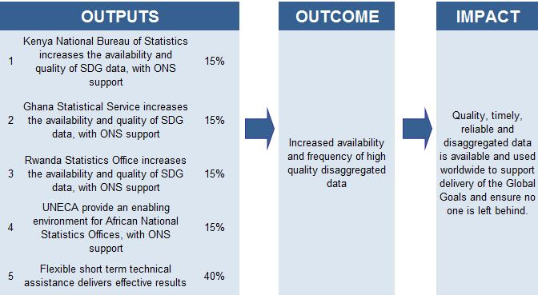
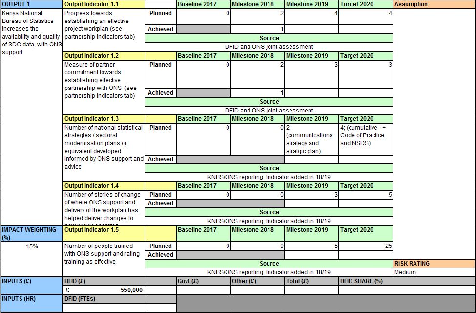

DART
Development Activities and Results Tracker
International Development Team
The Need
Monitoring, Evaluation and Learning
Current Project Structure

Current Project Structure

The Challenge
- Consistent reporting
- Record of changes
- Interoperability
The Challenge
- There are a wide range of results - can't always be numeric
- Large reliance on excel spread sheets
- Can be time consuming
- Structure of data is very restrictive - doesn't allow expression of complexity
Current Progress
- Developing a data model, collaborating with various departments in DfID
- Building an alpha to demonstrate the benefits of a new tool
- Trying to drive some support for this new model/tool
What's next?
- Build more features
- Continue our collaboration with other stakeholders in the international development/ aid sector
- Begin forming a small team of developers across ONS and DfID
Any comments/questions?
Thanks for listening
I'm always happy to explain what I'm doing, so please come and ask!